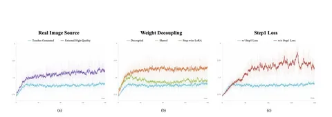

Сегодня разбираем статью о Z-Image Turbo++. Основная идея — повторное применение DMD к уже задистилелной модели. Так авторы дистиллируют 8-шаговый Z-Image Turbo в 2-шаговый генератор. Достигается это с помощью трёх приёмов:
1) Distribution-aligned adversarial training. В качестве «настоящих» семплов для дискриминатора GAN используют не реальные фотографии, а изображения, сгенерированные 8-шаговым teacher'ом. Так семплы тяжелее различить дискриминатору. По наблюдениям авторов, подмена реальных изображений сгенерированными стабилизирует обучение, а итоговая модель даёт меньше артефактов. Возможно, использование дополнительных техник для усложнения задачи дискриминатора, например R1-регуляризации, стабилизировало обучение с реальными данными.
2) Step-decoupled weights. Шагам 1 и 2 дают по собственной полной копии весов (обе инициализируются из teacher) вместо одной общей модели. Два шага решают очень разные подзадачи (шум → грубое изображение vs грубое изображение → чистое изображение). Поэтому одной общей модели не хватает ёмкости на оба шага. Использование отдельных LoRA-адаптеров для каждого шага работает хуже, чем тюнинг всех весов — например, для отрисовки текста.
3) End-to-end-обучение c отдельным лоссом для каждого шага. Оба шага обучаются вместе как единый пайплайн (шум → модель шага 1 → промежуточный результат → модель шага 2 → финальное изображение), так что градиенты от качества финального изображения текут обратно и в шаг 1, а не только в шаг 2. Важно, что при этом сохраняется явный лосс на собственном промежуточном выходе шага 1 (той же формы, что и лосс шага 2). Если его убрать, промежуточный результат первого шага коллапсирует в бессмысленное представление — и модель на последнем шаге исправляет это представление вместо того, чтобы просто добавить деталей.
Разбор подготовил
CV Time
